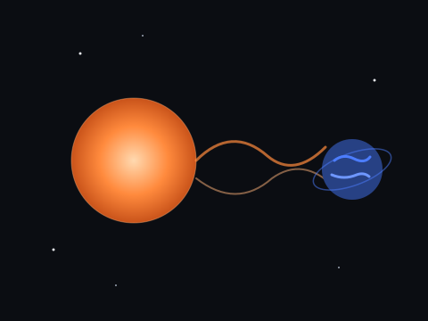
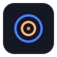

Monitorando o clima espacial
Alerta de tempestades solares em tempo real
Usamos dados orbitais da NASA para avisar quando o Sol ameaça a tecnologia da Terra.
Conhecer a solução
O Problema
Tempestades solares liberam radiação que atinge a Terra e danifica satélites, redes elétricas e sinais de GPS.
No Brasil, faltam alertas claros e acessíveis sobre esses eventos para a população e empresas.
Tecnologia
O OrbitAlert consome a API aberta DONKI, da NASA, que monitora o clima espacial em tempo real.
NASA DONKI
API gratuita com dados de erupções solares e tempestades geomagnéticas em tempo real.
HTML, CSS e JavaScript
Interface web leve e responsiva, sem frameworks, entregando alertas diretamente no navegador.
Python
Lógica computacional e modelagem matemática do comportamento das tempestades solares.
Arduino / Edge Computing
Sensor físico embarcado que reforça o alerta localmente em ambientes sem internet.
Objetivos
Levar informação espacial confiável para fora dos laboratórios e até as pessoas comuns.
Avisar cedo
Detectar e comunicar eventos solares antes do impacto.
Simplificar
Traduzir dados técnicos em alertas simples e visuais.
Educar
Ensinar sobre clima espacial de forma acessível.

Público-alvo
O OrbitAlert atende quem depende de tecnologia sensível à atividade solar.
Operadoras
Empresas de energia, telecom e GPS.
Aviação
Voos polares afetados por radiação solar.
Curiosos
Estudantes e entusiastas de astronomia.
Benefícios
Antecipar a tempestade evita prejuízo, protege equipamentos e mantém serviços essenciais funcionando.
Proteção
Reduz danos em redes elétricas e satélites.
Economia
Evita perdas financeiras com falhas inesperadas.
Acesso livre
Plataforma gratuita e aberta a todos.
Aplicação no dia a dia
O usuário recebe alertas direto no navegador e entende o nível de risco na hora.
Assim, decide se reforça sistemas, adia voos ou apenas observa as auroras com segurança.